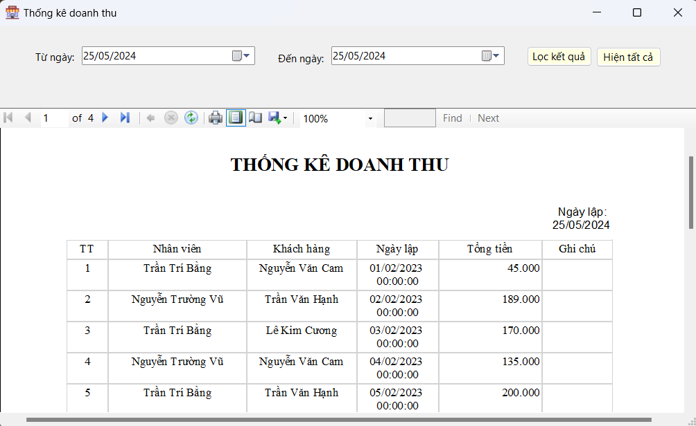

Hướng dẫn sử dụng màn hình Thống kê doanh thu.
1. Chọn khoảng thời gian cần thống kê: Ở phía trên của giao diện, có hai ô nhập liệu với nhãn là "Từ ngày:" và "Đến ngày:". Bạn cần nhập khoảng thời gian mà bạn muốn xem báo cáo doanh thu. Ví dụ: từ ngày 01/01/2024 đến ngày 25/05/2024.
Bạn có thể sử dụng biểu tượng lịch (calendar icon) bên cạnh ô nhập liệu để chọn ngày dễ dàng hơn.
2. Lọc kết quả: Sau khi chọn khoảng thời gian mong muốn, nhấn nút "Lọc kết quả" để hiển thị báo cáo doanh thu trong khoảng thời gian đã chọn.
3. Hiện tất cả:: Nếu bạn muốn xem toàn bộ báo cáo mà không lọc theo bất kỳ khoảng thời gian nào, bạn có thể nhấn nút "Hiện tất cả".